30. Внутренняя геометрия кристаллов
30–1 Внутренняя геометрия кристаллов#
Мы закончили изучение основных законов электричества и магнетизма и теперь можем заняться электромагнитными свойствами вещества. Начнем с изучения твердых тел, точнее кристаллов. Если атомы в веществе движутся не слишком активно, они сцепляются и располагаются в конфигурации с наименьшей возможной энергией. Если атомы где-то разместились так, что их расположения отвечают самой низкой энергии, то в другом месте атомы создадут такое же расположение. Поэтому в твердом веществе расположение атомов повторяется.
Иными словами, условия в кристалле таковы, что каждый атом окружен определенно расположенными другими атомами, и если посмотреть на атом такого же сорта в другом месте, где-нибудь подальше, то обнаружится, что окружение его и в новом месте точно такое же. Если вы выберете атом еще дальше, то еще раз найдете точно такие же условия. Порядок повторяется снова и снова и, конечно, во всех трех измерениях.

Представьте себе задачу: создать рисунок на обоях, ткани или какой-то геометрический узор для плоскости, в котором имеется элемент, повторяющийся непрерывно снова и снова, так что поверхность можно сделать настолько большой, насколько вам захочется. Это двумерный аналог задачи, решаемой в кристалле в трех измерениях. Например, на фиг. 30.1, а показан общий характер рисунка обоев. Один элемент повторяется регулярно, и это может продолжаться бесконечно. Геометрические характеристики этого рисунка обоев, учитывающие только его свойства повторяемости и не касающиеся геометрии самого цветка или его художественных достоинств, показаны на фиг. 30.1, б. Если вы возьмете за отправную любую точку, то сможете найти соответствующую точку, сдвигаясь на расстояние a в направлении, указанном стрелкой 1. Вы можете попасть в соответствующую точку, также сдвинувшись на расстояние b в направлении, указанном другой стрелкой. Конечно, имеется еще много других направлений. Так, вы можете из точки \alpha отправиться в точку \beta и достигнуть соответствующего положения, но такой шаг можно рассматривать как комбинацию шага в направлении 1 вслед за шагом в направлении 2. Одно из основных свойств ячейки состоит в том, что ее можно описывать двумя кратчайшими шагами к соседним эквивалентным расположениям. Под «эквивалентными» расположениями мы подразумеваем такие, что в каком бы из них вы ни находились, поглядев вокруг себя, вы увидите точно то же самое, что и в любом другом положении. Это фундаментальное свойство кристаллов. Единственное различие в том, что кристалл имеет трехмерное, а не двумерное расположение; и, естественно, каждый элемент решетки представляет не цветы, а какие-то образования из атомов, например шести атомов водорода и двух атомов углерода, регулярно повторяющиеся. Порядок расположения атомов в кристалле можно исследовать экспериментально с помощью дифракции рентгеновских лучей. Мы кратко упоминали об этом методе раньше и не будем добавлять здесь к сказанному чего-либо, а отметим лишь, что точное расположение атомов в пространстве установлено для большинства простых кристаллов, а также для многих довольно сложных кристаллов.
Внутреннее устройство кристалла проявляется по-разному. Во-первых, связующая сила атомов в определенных направлениях обычно сильнее, чем в других. Это означает, что имеются определенные плоскости, по которым кристалл разбить легче, чем в других направлениях. Они называются плоскостями спайности. Если кристалл расколоть лезвием ножа, то скорее всего он расщепится именно вдоль такой плоскости. Во-вторых, внутренняя структура часто проявляется на поверхности из-за способа формирования кристалла. Представьте себе, что кристалл образуется из раствора. В растворе плавают атомы, которые в конце концов пристраиваются, когда находят положение, отвечающее наименьшей энергии. (Все происходит так, как если бы обои создавались из цветков, плавающих до тех пор, пока один из них случайно не попадал бы на место и не закреплялся, затем следующий, и так далее, пока узор постепенно не разрастался.) Вы, вероятно, понимаете, что в одних направлениях кристалл будет расти быстрее, чем в других, создавая по мере роста некоторую геометрическую форму. Именно поэтому внешняя поверхность многих кристаллов носит на себе отпечаток внутреннего расположения атомов.
В качестве примера на фиг. 30.2, а показана форма типичного кристалла кварца, ячейка которого гексагональна. Если вы внимательно посмотрите на этот кристалл, то обнаружите, что его внешние грани образуют не слишком хороший шестиугольник, потому что не все стороны имеют одинаковую длину, а часто бывают даже совсем разными. Но в одном отношении этот шестиугольник вполне правильный: углы между гранями составляют в точности 120^\circ. Ясное дело, размер той или иной грани случайно складывается в процессе роста, но в углах проявляется геометрия внутреннего устройства. Поэтому все кристаллы кварца имеют разную форму, но в то же время углы между соответствующими гранями всегда одни и те же.
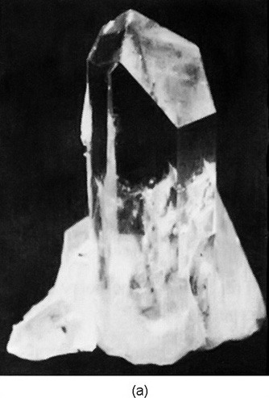
Внутреннее геометрическое устройство кристалла хлористого натрия также легко понять из его внешней формы. На фиг. 30.2, б показана типичная форма крупинки соли. Это опять не совершенный куб, но грани действительно перпендикулярны друг другу.
Более сложный кристалл — это слюда, он имеет форму, изображенную на фиг. 30.2, в. Этот кристалл в высшей степени анизотропен — он очень прочен в одном направлении (на рисунке — горизонтальном) и его трудно расколоть, а в другом направлении он легко расщепляется (в вертикальном). Обычно он используется для получения очень прочных, тонких листов. Слюда и кварц — примеры природных минералов, содержащих кремний. Третий минерал, содержащий кремний, — это асбест, обладающий тем интересным свойством, что его легко растянуть в двух направлениях, а в третьем он не поддается растягиванию. Создается впечатление, что он сделан из очень прочных линейных волокон.
30–2 Химические связи в кристаллах#
Механические свойства кристаллов в значительной степени зависят от типа химических связей между атомами. Поразительно разная прочность слюды в различных направлениях обусловлена характером межатомных связей в этих направлениях. В курсе химии вы, несомненно, уже изучали различные виды химических связей. Во-первых, это ионные связи, которые мы уже рассматривали на примере хлористого натрия. Грубо говоря, атомы натрия теряют электрон и становятся положительными ионами, а атомы хлора приобретают электрон и становятся отрицательными ионами. Положительные и отрицательные ионы располагаются в виде трехмерной шахматной доски и удерживаются вместе электрическими силами.
Ковалентная связь, при которой электроны обобществляются двумя атомами, встречается чаще и обычно бывает очень прочной. Например, в алмазе атомы углерода связаны ковалентными связями во всех четырех направлениях с ближайшими соседями, поэтому кристалл действительно очень твердый. Ковалентная связь существует также между кремнием и кислородом в кристалле кварца, но там связь является лишь частично ковалентной. Поскольку обобществление электронов происходит не полностью, атомы частично заряжены, и кристалл в некоторой степени является ионным. Природа не так проста, как мы пытаемся ее представить; на самом деле существуют все возможные переходы между ковалентной и ионной связью.
У кристалла сахара совсем другой тип связи. В нем имеются крупные молекулы, в которых атомы прочно удерживаются вместе ковалентными связями, так что сама молекула представляет собой прочную структуру. Но поскольку сильные связи полностью насыщены, между отдельными молекулами действуют лишь сравнительно слабые силы притяжения. В таких молекулярных кристаллах молекулы, так сказать, сохраняют свою индивидуальность, и их внутреннее расположение может выглядеть так, как показано на фиг. 30–3 . Поскольку молекулы не очень прочно связаны друг с другом, такие кристаллы легко разрушаются. Они сильно отличаются от таких веществ, как алмаз, который, по существу, является одной гигантской молекулой, которую невозможно разбить в каком-либо месте, не разорвав сильные ковалентные связи. Парафин — другой пример молекулярного кристалла.
Предельным примером молекулярного кристалла является такое вещество, как твердый аргон. Между атомами существует очень слабое притяжение — каждый атом представляет собой полностью насыщенную одноатомную молекулу. Но при очень низких температурах тепловое движение крайне мало, поэтому слабые межатомные силы могут заставить атомы укладываться в правильную структуру, подобно куче плотно упакованных сфер.
Металлы образуют совершенно иной класс веществ. Связь в них имеет абсолютно другую природу. В металле связь существует не между соседними атомами, а является свойством всего кристалла в целом. Валентные электроны не привязаны к одному атому или к паре атомов, а обобществлены во всем кристалле. Каждый атом отдает электрон в общий «электронный океан», и положительные ионы атомов располагаются в этом море отрицательных электронов. Электронное море удерживает ионы вместе, действуя как своего рода клей.
В металлах, поскольку нет специальных связей в каком-либо определенном направлении, отсутствует сильная направленность в характере сцепления атомов. Тем не менее они остаются кристаллическими, так как суммарная энергия минимальна, когда ионы атомов расположены в определенном порядке — хотя энергия такого предпочтительного расположения обычно ненамного ниже, чем у других возможных. В первом приближении атомы многих металлов подобны маленьким сферам, упакованным как можно плотнее.
30–3 Рост кристаллов#
Попробуйте представить себе естественный процесс образования кристаллов в земных недрах. В поверхностном слое Земли находится огромное количество самых разнообразных атомов. Они постоянно перемешиваются в результате вулканической деятельности, воздействия ветра и воды — непрерывно движутся и перемешиваются. И все же каким-то удивительным образом атомы кремния постепенно начинают находить друг друга, а также атомы кислорода, образуя кремнезем. Атомы присоединяются один за другим, выстраивая кристалл — смесь разделяется. А где-то поблизости атомы натрия и хлора находят друг друга и выстраивают кристалл соли.
Как получается, что, как только кристалл начинает расти, он позволяет присоединяться только определенному виду атомов? Это происходит потому, что вся система стремится к наименьшей возможной энергии. Растущий кристалл примет новый атом, если это приведет к максимально низкому уровню энергии. Но как он «знает», что атом кремния или кислорода в каком-то конкретном месте приведет к наименьшей энергии? Это происходит методом проб и ошибок. В жидкости все атомы находятся в постоянном движении. Каждый атом сталкивается со своими соседями около 10^{13} раз в секунду. Если он попадает в нужное место растущего кристалла, то вероятность того, что он снова отскочит, несколько уменьшается, если энергия там низкая. Постоянно проверяя это в течение миллионов лет со скоростью 10^{13} проб в секунду, атомы постепенно накапливаются там, где они находят свое состояние с наименьшей энергией. В конечном итоге они вырастают в большие кристаллы.
30–4 Кристаллические решетки#
Расположение атомов в кристалле — кристаллическая решетка — может принимать различные геометрические формы. Мы хотели бы сначала описать простейшие решетки, характерные для большинства металлов и твердых инертных газов. Это кубические решетки, которые могут существовать в двух формах: объемно-центрированной кубической, показанной на фиг. 30.4, а, и гранецентрированной кубической, показанной на фиг. 30.4, б. На рисунках, конечно, показан только один куб решетки; вам следует представить, что этот узор бесконечно повторяется во всех трех измерениях. Кроме того, для большей ясности рисунка показаны только «центры» атомов. В реальном кристалле атомы больше похожи на соприкасающиеся сферы. Темные и светлые сферы на рисунках могут, вообще говоря, обозначать разные виды атомов или один и тот же их вид. Например, железо при низких температурах имеет объемно-центрированную кубическую решетку, а при более высоких — гранецентрированную кубическую. Физические свойства этих двух кристаллических форм существенно различаются.
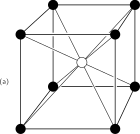
Как возникают такие формы? Представьте, что перед вами стоит задача упаковать сферические атомы как можно плотнее. Один из способов состоял бы в создании слоя в виде «гексагональной плотной упаковки», как показано на фиг. 30–5 (а). Затем можно выстроить второй слой, подобный первому, но смещенный по горизонтали, как показано на фиг. 30–5 (б). Затем можно поместить третий слой. Но заметьте! Существует два различных способа размещения третьего слоя. Если вы начнете третий слой с размещения атома в точке A на фиг. 30–5 (б), то каждый атом в третьем слое окажется прямо над атомом нижнего слоя. С другой стороны, если вы начнете третий слой с размещения атома в положении B, атомы третьего слоя будут центрированы в точках, расположенных ровно посередине треугольника, образованного тремя атомами нижнего слоя. Любое другое начальное местоположение эквивалентно A или B, поэтому существует всего два способа размещения третьего слоя.
Если третий слой имеет атом в точке B, кристаллическая решетка представляет собой гранецентрированную кубическую, но видимую под углом. Забавно, что, начиная с гексагонов, можно получить кубы. Однако заметьте, что куб, на который смотрят с угла, имеет гексагональный контур. Например, фиг. 30–6 может представлять собой плоский шестиугольник или куб, видимый в перспективе!
Если к фиг. 30–5 (б) добавить третий слой, начав с атома в положении A, то кубическая структура не образуется, и вместо нее решетка будет обладать лишь гексагональной симметрией. Ясно, что обе описанные нами возможности являются в равной степени плотными упаковками.
Некоторые металлы, например медь и серебро, выбирают первый вариант — гранецентрированную кубическую решетку. Другие, например бериллий и магний, выбирают иные варианты; они образуют гексагональные кристаллы. Понятно, что выбор кристаллической решетки не может зависеть только от упаковки маленьких шариков, а должен определяться отчасти и другими факторами. В частности, он зависит от слабой остаточной угловой зависимости межатомных сил (или, в случае металлов, от энергии электронного океана). Несомненно, обо всем этом вы узнаете на курсах химии.
30–5 Симметрии в двух измерениях#
Теперь мы хотели бы обсудить некоторые свойства кристаллов с точки зрения их внутренней симметрии. Главная особенность кристалла заключается в том, что если вы начнете с одного атома и переместитесь к соответствующему атому на расстоянии одной ячейки решетки, вы снова окажетесь в таком же окружении. Это фундаментальное положение. Но если бы вы были атомом, существовал бы и другой вид преобразования, который снова привел бы вас в такое же окружение, — это другая возможная «симметрия». На фиг. 30–7 (а) показан другой возможный узор «обоев» (хотя вы, вероятно, никогда такого не видели). Предположим, мы сравним окружения для точек A и B. Поначалу вам может показаться, что они одинаковы, но это не совсем так. Точки C и D эквивалентны A, но окружение B подобно окружению A только в том случае, если все вокруг зеркально отражено.
Существуют и другие виды «эквивалентных» точек в структуре. Например, точки E и F имеют «одинаковое» окружение, за исключением того, что одна из них повернута на 90^\circ по отношению к другой. Эта структура довольно необычна. Поворот на 90^\circ — или любой кратный ему угол — вокруг такой вершины, как A, полностью воспроизводит исходную структуру. Кристалл с таким строением снаружи имел бы прямые углы, но его внутреннее устройство сложнее, чем у простого куба.
Теперь, когда мы описали несколько частных примеров, давайте попытаемся выяснить все возможные виды симметрии, которыми может обладать кристалл. Сначала рассмотрим, что происходит на плоскости. Плоскую решетку можно определить с помощью двух так называемых примитивных векторов, проведенных из одной точки решетки к двум ближайшим эквивалентным точкам. Два вектора \FLPone и \FLPtwo являются примитивными векторами решетки на фиг. 30–1. Два вектора \mathbf{a} и \mathbf{b} на фиг. 30–7, а — это примитивные векторы соответствующей структуры. Мы могли бы, конечно, с таким же успехом заменить \mathbf{a} на -\mathbf{a} или \mathbf{b} на -\mathbf{b}. Поскольку \mathbf{a} и \mathbf{b} равны по величине и перпендикулярны друг другу, поворот на 90^\circ переводит \mathbf{a} в \mathbf{b}, а \mathbf{b} в -\mathbf{a}, вновь давая ту же самую решетку.
Мы видим, что существуют решетки, обладающие «четырехлучевой» симметрией. Ранее мы уже описали плотноупакованную структуру на основе шестиугольника, которая может обладать шестилучевой симметрией. Поворот системы кружков на фиг. 30–5, а на угол 60^\circ вокруг центра любого кружка приводит к тому, что картина совмещается сама с собой.
Какие еще виды вращательной симметрии существуют? Можем ли мы иметь, например, пятикратную или восьмикратную вращательную симметрию? Легко показать, что они невозможны. Единственная симметрия с числом сторон больше четырех — это шестикратная симметрия. Прежде всего покажем, что симметрия выше шестикратной невозможна. Предположим, мы попытаемся вообразить решетку с двумя равными примитивными векторами, угол между которыми меньше 60^\circ, как на фиг. 30.8, а. Мы должны предположить, что точки B и C эквивалентны A, и что \mathbf{a} и \mathbf{b} — это два кратчайших вектора от A до его эквивалентных соседей. Но это явно неверно, поскольку расстояние между B и C меньше, чем от любой из них до A. Должен существовать сосед в точке D, эквивалентный A, который находится ближе, чем B или C. Мы должны были выбрать \mathbf{b}' в качестве одного из наших примитивных векторов. Таким образом, угол между двумя примитивными векторами должен быть 60^\circ или больше. Восьмикратная симметрия невозможна.

А как же поворотная симметрия пятого порядка? Если предположить, что примитивные векторы \mathbf{a} и \mathbf{b} имеют равные длины и образуют угол 2\pi/5=72^\circ, как на фиг. 30–8 (б), то должен существовать также эквивалентный узел решетки в точке D, на расстоянии 72^\circ от C. Но тогда вектор \mathbf{b}' от E до D будет меньше, чем \mathbf{b}, так что \mathbf{b} не является примитивным вектором. Поворотной симметрии пятого порядка быть не может. Единственные возможности, не приводящие к подобным затруднениям, — это \theta=60^\circ, 90^\circ или 120^\circ. Нуль или 180^\circ также, очевидно, возможны. Наш результат можно сформулировать так: узор остается неизменным при повороте на один полный оборот (изменения вообще нет), на половину оборота, на одну треть, на одну четверть или на одну шестую оборота. Это и есть все возможные виды поворотной симметрии на плоскости — всего пять. Если \theta=2\pi/n, мы говорим о симметрии « n -го порядка». Мы говорим, что узор с n, равным 4 или 6, обладает «более высокой симметрией», чем узор с n, равным 1 или 2.
Возвращаясь к фиг. 30–7, а, мы видим, что этот узор обладает осью симметрии четвертого порядка. На фиг. 30–7, б мы нарисовали другой узор, обладающий теми же свойствами симметрии, что и часть а. Маленькие фигуры, похожие на запятые, являются асимметричными объектами, которые служат для определения симметрии узора внутри каждого квадрата. Заметьте, что в соседних квадратах запятые развернуты, так что элементарная ячейка больше, чем один из маленьких квадратов. Если бы не было запятых, узор все равно обладал бы симметрией четвертого порядка, но элементарная ячейка была бы меньше. Узоры на фиг. 30–7 обладают и другими свойствами симметрии. Например, отражение относительно любой из штриховых линий R – R воспроизводит тот же самый узор.
Узоры на фиг. 30.7 обладают еще одним видом симметрии. Если узор отразить относительно линии Y – Y и сдвинуть на один квадрат вправо (или влево), мы получим исходный узор. Линия Y – Y называется линией скользящего отражения.
Это все возможные типы симметрии на плоскости. Существует еще одна операция пространственной симметрии, которая в двумерном случае эквивалентна повороту на 180^\circ, но в трехмерном пространстве является совершенно самостоятельной операцией. Это инверсия. Под инверсией мы понимаем перенос любой точки, находящейся на расстоянии, задаваемом вектором смещения \mathbf{R} от некоторого начала координат [например, точки A на фиг. 30–9 (б)], в точку, положение которой определяется вектором -\mathbf{R}.

Инверсия структуры (a) на фиг. 30–9 дает новую структуру, тогда как инверсия структуры (b) воспроизводит ту же самую структуру. Для двумерной структуры (как видно из рисунка) инверсия структуры (b) относительно точки A эквивалентна повороту на угол 180^\circ вокруг той же точки. Предположим, однако, что мы сделаем структуру на фиг. 30–9 (b) трехмерной, представив, что у каждого из маленьких 6 и 9 есть «стрелка», направленная из плоскости рисунка. После инверсии в трех измерениях все стрелки изменят направление на противоположное, поэтому структура не воспроизведется. Если мы обозначим острия и оперения стрелок точками и крестиками соответственно, мы сможем создать трехмерную структуру, как на фиг. 30–9 (c), которая не обладает симметрией относительно инверсии, или же мы можем создать структуру, подобную показанной в (d), которая обладает такой симметрией. Заметьте, что невозможно имитировать трехмерную инверсию с помощью какой-либо комбинации поворотов.
Если мы охарактеризуем «симметрию» узора — или решетки — с помощью видов операций симметрии, которые мы описывали, то окажется, что для двух измерений возможно 17 различных узоров. Мы изобразили один узор с наименьшей возможной симметрией на фиг. 30–1 и один с высокой симметрией на фиг. 30–7. Мы предоставим вам возможность самим попытаться найти все 17 возможных узоров.
Удивительно, как мало из 17 возможных узоров используется при создании обоев и тканей. Постоянно видишь одни и те же три или четыре основных рисунка. Связано ли это с отсутствием воображения у дизайнеров или с тем, что многие из возможных узоров не радуют глаз?
30–6 Симметрии в трех измерениях#
До сих пор мы говорили только о конфигурациях в двух измерениях. Однако нас на самом деле интересуют конфигурации атомов в трех измерениях. Во-первых, очевидно, что трехмерный кристалл будет иметь три примитивных вектора. Если мы затем зададимся вопросом о возможных операциях симметрии в трех измерениях, то обнаружим, что существует 230 различных возможных симметрий! Для некоторых целей эти 230 типов можно сгруппировать в семь классов, которые показаны на фиг. 30–10. Решетка с наименьшей симметрией называется триклинной. Ее элементарная ячейка представляет собой параллелепипед. Примитивные векторы имеют различную длину, и никакие два угла между ними не равны. Здесь нет возможности для какой-либо вращательной или зеркальной симметрии. Однако все еще остаются две возможные симметрии — элементарная ячейка либо меняется, либо не меняется при инверсии через вершину. (Под инверсией в трех измерениях мы снова понимаем, что пространственные смещения \mathbf{R} заменяются на -\mathbf{R} — иными словами, что (x,y,z) переходит в (-x,-y,-z)). Таким образом, триклинная решетка имеет только две возможные симметрии, если только между примитивными векторами нет какого-то особого соотношения. Например, если все векторы равны и разделены равными углами, получается тригональная решетка, показанная на рисунке. Эта фигура может обладать дополнительной симметрией; она может оставаться неизменной при вращении вокруг длинной пространственной диагонали.

Если один из примитивных векторов, скажем \mathbf{c}, перпендикулярен двум другим, мы получаем моноклинную элементарную ячейку. Возможна новая симметрия — поворот на 180^\circ вокруг \mathbf{c}. Гексагональная ячейка — это особый случай, в котором векторы \mathbf{a} и \mathbf{b} равны, а угол между ними составляет 60^\circ, так что поворот на 60^\circ, или 120^\circ, или 180^\circ вокруг вектора \mathbf{c} повторяет ту же самую решетку (для определенных внутренних симметрий).
Если все три примитивных вектора взаимно перпендикулярны, но имеют разную длину, мы получаем ромбическую ячейку. Фигура обладает симметрией относительно поворотов на 180^\circ вокруг трех осей. Более высокие порядки симметрии возможны для тетрагональной ячейки, у которой все углы прямые, а два примитивных вектора равны. Наконец, существует кубическая ячейка, которая является наиболее симметричной из всех.
Смысл всего этого обсуждения симметрий заключается в том, что внутренние симметрии кристаллов проявляются — иногда весьма тонко — в макроскопических физических свойствах кристалла. Например, кристалл в общем случае обладает тензорной электрической поляризуемостью. Если мы опишем этот тензор с помощью эллипсоида поляризации, то следует ожидать, что некоторые симметрии кристалла проявятся и в этом эллипсоиде. Например, кубический кристалл симметричен относительно поворота на 90^\circ вокруг любого из трех ортогональных направлений. Очевидно, что единственным эллипсоидом, обладающим таким свойством, является сфера. Кубический кристалл должен быть изотропным диэлектриком.
С другой стороны, тетрагональный кристалл обладает осью симметрии четвертого порядка. Его эллипсоид должен иметь две равные главные оси, а третья должна быть параллельна оси кристалла. Аналогично, поскольку ромбический кристалл обладает осями симметрии второго порядка относительно трех ортогональных осей, его оси должны совпадать с осями эллипсоида поляризации. Подобным же образом одна из осей моноклинного кристалла должна быть параллельна одной из главных осей эллипсоида, хотя о других осях мы ничего сказать не можем. Поскольку триклинный кристалл не обладает никакой симметрией вращения, эллипсоид может иметь любую ориентацию.
Как видите, можно придумать целую игру, выявляя возможные симметрии и сопоставляя их с возможными физическими тензорами. Мы рассматривали только тензор поляризации, но с другими тензорами дело обстоит сложнее — например, с тензором упругости. Существует раздел математики, называемый «теорией групп», который занимается подобными вопросами, но обычно нужные выводы можно сделать и с помощью здравого смысла.
30–7 Прочность металлов#
Мы уже говорили, что металлы обычно имеют простую кубическую кристаллическую структуру; теперь мы хотим обсудить их механические свойства, которые зависят от этой структуры. Металлы, вообще говоря, очень «мягкие», потому что слои кристалла легко скользят друг относительно друга. Вы можете подумать: «Это нелепо; металлы прочные». Это не так: монокристалл металла можно очень легко деформировать.
Представьте себе два слоя кристалла, на которые действует сдвигающая сила, как показано на схеме фиг. 30–11 (а). Вы могли бы сначала подумать, что весь слой будет сопротивляться движению, пока сила не станет достаточно большой, чтобы протолкнуть его целиком «через горб», так что он сместится на один шаг влево. Хотя сдвиг действительно происходит вдоль плоскости, это происходит иначе. (Если бы это было так, вы бы рассчитали, что металл гораздо прочнее, чем он есть на самом деле.) В действительности происходит скорее последовательное движение атомов: сначала делает скачок крайний левый атом, затем следующий и так далее, как показано на фиг. 30–11 (б). По сути, свободное пространство между двумя атомами быстро перемещается вправо, в результате чего весь второй слой смещается на одно межатомное расстояние. Сдвиг идет таким образом, потому что на подъем одного атома через «горб» требуется гораздо меньше энергии, чем на подъем целого ряда. Как только сила становится достаточной для начала процесса, дальше он протекает очень быстро.
Оказывается, что в реальном кристалле скольжение происходит многократно по одной плоскости, затем прекращается и начинается по другой. Детали того, почему оно начинается и прекращается, довольно загадочны. На самом деле довольно странно, что последовательные области скольжения часто расположены довольно равномерно. На фиг. 30.12 показана фотография крошечного тонкого кристалла меди, который был растянут. Вы можете видеть различные плоскости, по которым произошло скольжение.
![Фиг. 30–12. Фотография небольшого кристалла меди после растяжения. [Предоставлено С. С. Бреннером, старшим научным сотрудником Исследовательского центра сталелитейной промышленности США, Монровилл, штат Пенсильвания.]](../images/Ch30-F12.jpg)
Внезапное смещение отдельных кристаллических плоскостей становится вполне заметным, если взять кусок оловянной проволоки с крупными кристаллами и растягивать его, поднеся к уху. Можно услышать поток «щелчков» — это плоскости одна за другой соскакивают в новые положения.
Проблема «отсутствующего» атома в одном ряду несколько сложнее, чем может показаться из рис. 30–11. Когда слоев больше, ситуация должна выглядеть примерно так, как показано на рис. 30–13. Такое несовершенство в кристалле называется дислокацией. Предполагается, что такие дислокации либо присутствуют в кристалле с момента его образования, либо возникают вблизи какого-либо надреза или трещины на поверхности. Однажды возникнув, они могут относительно свободно перемещаться по кристаллу. Макроскопические искажения являются результатом движения множества таких дислокаций.
Дислокации могут перемещаться свободно — то есть для этого требуется совсем немного дополнительной энергии — до тех пор, пока остальная часть кристалла имеет идеальную решетку. Однако они могут «застрять», если встретят какой-либо другой вид несовершенства в кристалле. Если для преодоления такого несовершенства требуется много энергии, их движение остановится. Это в точности тот механизм, который придает прочность несовершенным металлическим кристаллам. Чистые кристаллы железа довольно мягкие, но небольшая концентрация атомов примесей может вызвать достаточное количество несовершенств, чтобы эффективно обездвижить дислокации. Как вы знаете, сталь, состоящая в основном из железа, очень твердая. Чтобы получить сталь, небольшое количество углерода растворяют в расплавленном железе; если расплав быстро охлаждается, углерод выпадает в осадок в виде мелких зерен, создавая множество микроскопических искажений в решетке. Дислокации больше не могут перемещаться, и металл становится твердым.
Чистая медь очень мягкая, но ее можно «наклепать». Это делается ударами молотка или изгибанием туда-сюда. В этом случае образуется много новых дислокаций различных видов, которые мешают друг другу, снижая свою подвижность. Возможно, вы видели фокус, когда пруток «отожженной» мягкой меди осторожно сгибают вокруг запястья человека в виде браслета. В процессе этого он наклепывается и его уже нелегко разогнуть снова! Наклепанный металл, такой как медь, можно снова сделать мягким путем отжига при высокой температуре. Тепловое движение атомов «разглаживает» дислокации и снова создает крупные монокристаллы. До сих пор мы описывали только так называемую дислокацию сдвига. Существует много других видов, один из которых — винтовая дислокация, показанная на фиг. 30.14. Такие дислокации часто играют важную роль в росте кристаллов.
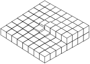
30–8 Дислокации и рост кристаллов#
Долгое время одной из величайших загадок было то, как именно растут кристаллы. Мы описали, как каждый атом может путем многократных «проб» определять, лучше ему находиться в кристалле или нет. Но это означает, что каждый атом должен найти место с низкой энергией. Однако атом, помещенный на новую поверхность, связан лишь одной или двумя связями с нижним слоем и не обладает той же энергией, которую он имел бы, будучи помещенным в угол, где он был бы окружен атомами с трех сторон. Представим себе растущий кристалл как стопку блоков, как показано на фиг. 30.15. Если мы попробуем поместить новый блок, скажем, в позицию A, то у него будет только один из шести соседей, которые он должен получить в конечном итоге. Поскольку не хватает стольких связей, его энергия не очень мала. Ему было бы лучше оказаться в позиции B, где он уже имеет половину своей доли связей. Кристаллы действительно растут путем присоединения новых атомов в таких местах, как B.
Что же происходит, когда этот ряд заканчивается? Для начала нового ряда атом должен остановиться, имея всего две связи, что опять же маловероятно. Даже если бы это произошло, что было бы, когда слой был закончен? Как мог бы начаться новый слой? Один из ответов состоит в том, что кристалл предпочитает расти на дислокации, например, вокруг винтовой дислокации, показанной на фиг. 30–14 . Поскольку к этому кристаллу добавляются блоки, всегда находится место, где имеются три свободные связи. Поэтому кристалл предпочитает расти со встроенной дислокацией. Такой спиральный узор роста показан на фиг. 30–16 , которая представляет собой фотографию монокристалла парафина.
![Фиг. 30.16. Кристалл парафина, выросший вокруг винтовой дислокации. [Из книги Ч. Киттеля «Введение в физику твердого тела», изд-во John Wiley and Sons, Inc., Нью-Йорк, 2-е изд., 1956 г.]](../images/Ch30-F16.jpg)
30–9 Кристаллическая модель Брэгга — Ная#
Разумеется, мы не можем видеть, что происходит с отдельными атомами в кристалле. Кроме того, как вы теперь уже понимаете, существует много сложных явлений, которые нелегко подвергнуть количественному анализу. Сэр Лоуренс Брэгг и Дж. Ф. Най разработали схему создания модели металлического кристалла, которая поразительным образом демонстрирует многие явления, происходящие, как полагают, в реальном металле. На следующих страницах мы воспроизвели их оригинальную статью, в которой описывается этот метод и представлены некоторые полученные с его помощью результаты. (Статья перепечатана из «Proceedings of the Royal Society of London», том 190, сентябрь 1947 г., стр. 474–481 — с разрешения авторов и Королевского общества.) 1
1. Модель пузырьков Время от времени описывались модели кристаллической структуры, в которых атомы представлены маленькими плавающими или подвешенными магнитами либо круглыми дисками, плавающими на поверхности воды и удерживаемыми вместе силами капиллярного притяжения. У этих моделей есть определенные недостатки; например, в случае плавающих объектов, находящихся в контакте, силы трения препятствуют их свободному относительному движению. Более серьезный недостаток заключается в том, что число компонентов ограничено, так как для приближения к состоянию дел в реальном кристалле требуется большое количество компонентов. В настоящей статье описывается поведение модели, в которой атомы представлены маленькими пузырьками диаметром от 2\Rdot0 до 0\Rdot1 мм, плавающими на поверхности мыльного раствора. Эти маленькие пузырьки достаточно устойчивы для экспериментов, длящихся час или более, они скользят друг относительно друга без трения, и их можно создавать в больших количествах. Некоторые иллюстрации в этой статье взяты из ансамблей пузырьков численностью 100{,}000 или более. Модель наиболее точно отражает поведение металлической структуры, поскольку пузырьки одного типа и удерживаются вместе общим капиллярным притяжением, которое представляет собой силу связи свободных электронов в металле. Краткое описание модели было дано в «Journal of Scientific Instruments» (Bragg 1942 b).
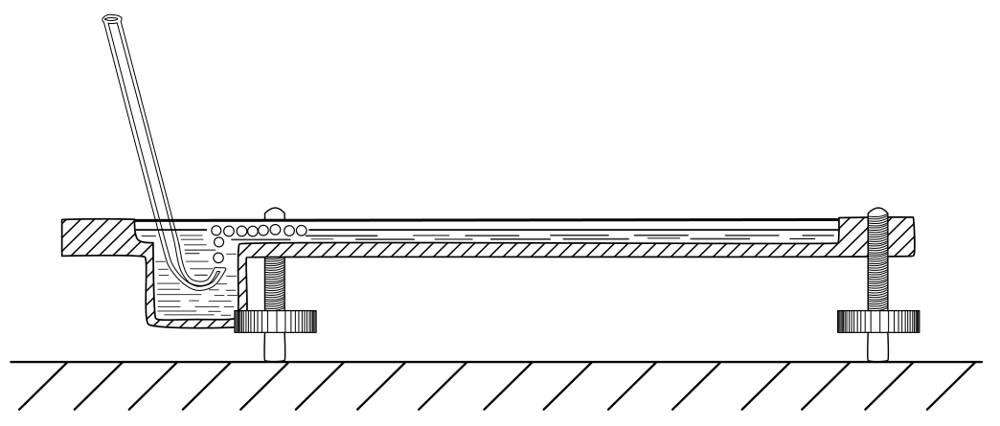
2. Метод образования Пузырьки выдуваются из узкого отверстия под поверхностью мыльного раствора. Наилучшие результаты мы получили с раствором, рецепт которого был дан нам г-ном Грином из Королевского института. 15\Rdot2 см³ олеиновой кислоты (чистой перегнанной) хорошо взбалтывается в 50 см³ дистиллированной воды. Это тщательно смешивается с 73 см³ 10%-го раствора триэтаноламина, после чего объем смеси доводится до 200 см³. К этому добавляется 164 см³ чистого глицерина. Раствор оставляют отстаиваться, а затем сливают прозрачную жидкость снизу. В некоторых экспериментах его разбавляли водой в трехкратном объеме для уменьшения вязкости. Отверстие сопла находится примерно на 5 мм ниже поверхности. Постоянное давление воздуха от 50 до 200 см водяного столба подается с помощью двух бутылей Уинчестера. Обычно пузырьки на удивление одинаковы по размеру. Иногда они выходят беспорядочно, но это можно исправить заменой сопла или изменением давления. Ненужные пузырьки легко разрушить, проведя над поверхностью небольшим пламенем. На фиг. 1 показана установка. Мы обнаружили, что полезно зачернить дно сосуда, так как детали структуры, такие как границы зерен и дислокации, становятся тогда более четко видимыми.
На рисунке 2, таблица 8, показана часть слоя или двумерного кристалла из пузырьков. Об их регулярности можно судить, если смотреть на рисунок под скользящим углом. Размер пузырьков меняется в зависимости от апертуры, но, по-видимому, не меняется в заметной степени от давления или глубины отверстия под поверхностью. Основной эффект увеличения давления заключается в увеличении скорости образования пузырьков. В качестве примера: струя с толстыми стенками диаметром 49 \mu при давлении 100 см создавала пузырьки диаметром 1\Rdot2 мм. Струя с тонкими стенками диаметром 27 \mu и давлением 180 см создавала пузырьки диаметром 0\Rdot6 мм. Удобно называть пузырьки диаметром от 2\Rdot0 до 1\Rdot0 мм «крупными», пузырьки от 0\Rdot8 до 0\Rdot6 мм — «средними», а пузырьки от 0\Rdot3 до 0\Rdot1 мм — «мелкими», так как их поведение зависит от их размера.

С помощью этого приспособления нам не удалось уменьшить размер струи и, таким образом, получить пузыри диаметром менее 0\Rdot6 мм. Поскольку возникло желание провести эксперимент с очень маленькими пузырьками, мы прибегли к помещению мыльного раствора во вращающийся сосуд и введению тонкой струи как можно более параллельно линии тока. Пузырьки уносятся по мере их образования, и при установившемся режиме они становятся достаточно однородными. Они выходят со скоростью тысяча и более в секунду, издавая высокий звук. Мыльный раствор поднимается крутой стеной вдоль периметра сосуда во время его вращения, но забирает обратно большинство пузырьков, когда вращение прекращается. С помощью этого устройства, показанного на рисунке 3, можно получить пузырьки диаметром до 0\Rdot12 мм. Например, отверстие размером 38 \mu в тонкостенной струе при давлении 190 см вод. ст. и скорости потока жидкости 180 см/с мимо отверстия позволило получить пузырьки диаметром 0\Rdot14 мм. В этом случае использовалась чаша диаметром 9\Rdot5 см, вращающаяся со скоростью 6 об./с. На рисунке 4 (таблица 8) представлено увеличенное изображение этих «маленьких» пузырьков, показывающее степень их регулярности; рисунок получается не таким идеальным при использовании вращающегося сосуда, как при использовании неподвижного, при этом ряды выглядят слегка неровными, если смотреть в скользящем направлении.
Эти двумерные кристаллы демонстрируют структуры, существование которых предполагалось в металлах, и воспроизводят наблюдаемые эффекты, такие как границы зерен, дислокации и другие виды дефектов, скольжение, рекристаллизация, отжиг и деформации, вызванные «посторонними» атомами.
3. Границы зерен На фиг. 5, а, 5, б и 5, в, а также на вклейках 9 и 10 показаны типичные границы зерен для пузырьков диаметром 1\Rdot87, 0\Rdot76 и 0\Rdot30 мм соответственно. Ширина возмущенной области на границе, где пузырьки распределены беспорядочно, в общем случае тем больше, чем меньше пузырьки. На фиг. 5, а, где показаны части нескольких соседних зерен, пузырьки на границе между двумя зернами четко примыкают к той или иной кристаллической структуре. На фиг. 5, в между двумя зернами заметен «слой Бейлби». Как можно видеть, мелкие пузырьки обладают большей жесткостью, чем крупные, и это, по-видимому, приводит к большей нерегулярности на границе раздела.
Отдельные зерна отчетливо проявляются, если рассматривать под углом фотографии поликристаллических плотов, подобные тем, что приведены на рисунках 5 а — 5 с, таблицы 9 и 10, и на рисунках 12 а — 12 е, таблицы 14 — 16. При соответствующем освещении плавающий плот из пузырьков при взгляде на него под углом удивительным образом напоминает полированный и протравленный металл.
В поликристаллическом плоту часто встречаются «примесные атомы» или пузырьки, которые заметно больше или меньше остальных, и в этом случае значительная их доля располагается на границах зерен. Было бы неправильно сказать, что нерегулярные пузырьки перемещаются к границам; недостатком данной модели является то, что в ней невозможна диффузия пузырьков через структуру, а возможны лишь взаимные подстройки соседей. По-видимому, границы стремятся перестроиться путем роста одного кристалла за счет другого до тех пор, пока они не пройдут через нерегулярные атомы.
4. Дислокации Когда монокристалл или поликристаллический слой сжимают, растягивают или подвергают иной деформации, он обнаруживает поведение, очень похожее на то, что было описано для металлов, подвергнутых нагрузке. До определенного предела модель находится в области упругости. За этой точкой она деформируется путем скольжения вдоль одного из трех равнонаклоненных направлений плотно упакованных рядов. Скольжение происходит за счет того, что пузырьки в одном ряду перемещаются вперед относительно пузырьков в следующем ряду на расстояние, равное расстоянию между соседними частицами. Очень интересно наблюдать за этим процессом. Движение происходит не одновременно вдоль всего ряда, а начинается с одного конца с появления «дислокации», при которой локально в рядах с одной стороны линии скольжения оказывается на один пузырек больше, чем с другой. Затем эта дислокация проходит вдоль линии скольжения от одного края кристалла до другого, и конечным результатом является сдвиг на одно «межатомное» расстояние. Такой процесс был предложен Орованом, Поляни и Тейлором для объяснения малых сил, требуемых для возникновения пластического скольжения в металлических структурах. Теория, выдвинутая Тейлором (1934) для объяснения механизма пластической деформации кристаллов, рассматривает взаимное действие и равновесие таких дислокаций. Пузырьки дают очень наглядную картину того, что, как предполагалось, происходит в металле. Иногда дислокации движутся довольно медленно, затрачивая секунды на пересечение кристалла; неподвижные дислокации также можно увидеть в кристаллах, которые напряжены неоднородно. Они выглядят как короткие черные линии, и их можно увидеть в серии фотографий, рисунки 12 а — 12 е, таблицы 14 — 16. Когда поликристаллический слой сжимают, видно, как эти темные линии мечутся во всех направлениях по кристаллам.
На фиг. 6а, 6б и 6в, а также на табл. 10 и 11 приведены примеры дислокаций. На фиг. 6а, где диаметр пузырьков равен 1\Rdot9 мм, дислокация локализована и охватывает около шести пузырьков. На фиг. 6б (диаметр 0\Rdot76 мм) она охватывает двенадцать пузырьков, а на фиг. 6в (диаметр 0\Rdot30 мм) ее влияние прослеживается на протяжении около пятидесяти пузырьков. Большая жесткость малых пузырьков приводит к более длинным дислокациям. Изучение любой совокупности пузырьков показывает, однако, что не существует стандартной длины дислокации для каждого размера. Длина зависит от характера деформации в кристалле. Границу между двумя кристаллами, оси которых повернуты приблизительно на 30^\circ (максимально возможный угол), можно рассматривать как ряд дислокаций в чередующихся рядах; в этом случае дислокации очень короткие. По мере уменьшения угла между соседними кристаллами дислокации располагаются на больших интервалах и одновременно становятся длиннее, пока, наконец, в крупном теле с идеальной структурой не появятся отдельные дислокации, как показано на фиг. 6а, 6б и 6в.
На фиг. 7, табл. 11, показаны три параллельные дислокации. Если назвать их положительными и отрицательными (вслед за Тейлором), то слева направо они будут: положительная, отрицательная, положительная. В полосе между двумя последними имеется три лишних пузырька, что можно увидеть, если смотреть вдоль рядов в горизонтальном направлении. На фиг. 8, табл. 12, показана дислокация, выходящая из границы зерна — эффект, который часто наблюдается.
На рис. 9 (табл. 12) показано место, где два пузырька занимают место одного. Это можно рассматривать как предельный случай положительной и отрицательной дислокаций в соседних рядах, при котором области сжатия дислокаций обращены друг к другу. Противоположный случай привел бы к появлению дырки в структуре, при этом в точке встречи дислокаций отсутствовал бы один пузырек.
5. Другие типы дефектов На фиг. 10, таблица 12, показана узкая полоса между двумя кристаллами параллельной ориентации; полоса пересекается рядом линий дефектов, где пузырьки не находятся в плотной упаковке. Именно в таких местах следует ожидать рекристаллизацию. Границы сближаются, и полоса поглощается более широкой областью совершенного кристалла.
На рисунках 11 а–г и на таблицах 13 и 14 приведены примеры расположений, которые часто возникают в местах с локальной нехваткой пузырьков. В то время как дислокация видна как темная полоса при общем обзоре, эти структуры проявляются в форме буквы V или треугольников. Типичная V-образная структура видна на рисунке 11 а. При деформации модели V-образная структура образуется двумя дислокациями, встречающимися под углом 60^\circ; она разрушается при продолжении движения дислокаций по своим путям. На рисунке 11 б показан небольшой треугольник, который также включает в себя дислокацию, поскольку можно заметить, что в рядах под дефектом на один пузырек больше, чем в рядах выше. Если путем легкого встряхивания одной стороны кристалла вызвать умеренное «тепловое движение», такие дефектные места исчезают и формируется идеальная структура.
Кое-где в кристаллах встречаются пустые места, где отсутствует «пузырек», что на общем виде выглядит как черная точка. Примеры можно увидеть на фиг. 11, г. Такая пустота не может быть устранена путем локальной перестройки, так как заполнение одной дырки ведет к появлению другой. Такие дырки то появляются, то исчезают при «холодной обработке» кристалла. Эти структуры в модели позволяют предположить, что подобные локальные дефекты могут существовать и в реальном металле. Они могут играть роль в таких процессах, как диффузия или переход порядок—беспорядок, снижая энергетические барьеры в окрестности дефекта, а также служить центрами кристаллизации при аллотропическом превращении.
6. Перекристаллизация и отжиг На рисунках 12 а — 12 е, таблицы 14 — 16, показан один и тот же слой пузырьков в последовательные моменты времени. Слой, покрывающий поверхность раствора, энергично перемешивали стеклянными граблями, а затем оставляли для самопроизвольной перестройки. На рисунке 12 а показан его вид примерно через 1 с после прекращения перемешивания. Слой разбит на множество мелких «кристаллитов»; они находятся в состоянии сильной неоднородной деформации, что видно по многочисленным дислокациям и другим дефектам. На следующей фотографии (рисунок 12 б) показан тот же слой 32 с спустя. Мелкие зерна объединились, образовав более крупные, и большая часть деформаций в процессе этого исчезла. Перекристаллизация продолжается на протяжении всей серии, последние три фотографии которой показывают вид слоя через 2, 14 и 25 мин после начала перемешивания. Прослеживать перестройку в течение более длительного времени невозможно, так как пузырьки при долгом стоянии уменьшаются в размерах, по-видимому, из-за диффузии воздуха через их стенки, а также становятся тонкими и склонны к разрыву. В процессе этого к модели не прилагалось никаких внешних воздействий. Происходит все более медленный процесс перестройки: движение пузырьков в одной части слоя создает деформации, которые вызывают перестройку в соседней части, а та, в свою очередь, — в следующей.
На этой серии снимков можно заметить ряд интересных моментов. Обратите внимание на три маленьких зерна в точках с координатами AA, BB, CC. A сохраняется, хотя и меняет форму, на протяжении всей серии. B все еще присутствует через 14 мин., но исчезает через 25 мин., оставляя после себя четыре дислокации, отмечающие внутренние напряжения в зерне. Зерно C уменьшается и окончательно исчезает на рисунке 12 d, оставляя полость и V-образную конфигурацию, которая исчезает на рисунке 12 e. В то же время нечеткая граница на рисунке 12 d в области DD становится четкой на рисунке 12 e. Заметьте также выпрямление границы зерна в окрестности EE на рисунках от 12 b до 12 e. Можно видеть дислокации различной длины, отмечающие все стадии — от легкого искажения структуры до четкой границы. Полости там, где отсутствуют пузырьки, выглядят как черные точки. Некоторые из этих полостей образуются или заполняются в результате движения дислокаций, но другие представляют собой места, где пузырек лопнул. Можно увидеть много примеров V-образных фигур и некоторые треугольники. Другие интересные моменты станут очевидны при изучении этой серии фотографий.
На фиг. 13 а, 13 б и 13 в (таблица 17) показана часть пены 1 с, 4 с и 4 мин после процесса перемешивания; они представляют интерес, так как демонстрируют две последовательные стадии релаксации по направлению к более совершенному расположению. Эти изменения хорошо видны, если смотреть на страницу под скользящим углом. В фигуре 13 а расположение очень нарушено. На фигуре 13 б пузырьки сгруппировались в ряды, однако кривизна этих рядов указывает на высокую степень внутреннего напряжения. На фигуре 13 в это напряжение снялось путем образования новой границы A – A, и ряды по обе стороны от нее теперь стали прямыми. По-видимому, энергия этого напряженного кристалла больше, чем энергия межкристаллитной границы. Мы признательны фирме «Кодак» за фотографии для фигуры 13, которые были сделаны во время съемок упомянутого ниже кинофильма.
7. Влияние примесного атома На фиг. 14, табл. 18 показано обширное влияние пузырька неправильного размера. Если сравнить этот рисунок с идеальными решетками, показанными на фиг. 2 и 4, табл. 8, то можно увидеть, что три пузырька — один больше и два меньше обычных — нарушают упорядоченность рядов по всей площади рисунка. Как упоминалось выше, пузырьки неправильного размера обычно обнаруживаются в границах зерен, где встречаются пустоты неправильной формы, в которых они могут разместиться.
8. Механические свойства двумерной модели Механические свойства двумерного идеального «плота» были описаны в вышеупомянутой статье (Bragg 1942 b ). Плот располагается между двумя параллельными пружинами, горизонтально погруженными в поверхность мыльного раствора. Шаг пружин подбирается так, чтобы соответствовать расстоянию между рядами пузырьков, которые затем прочно к ним прилипают. Одна пружина может перемещаться параллельно самой себе с помощью микрометрического винта, а другая поддерживается двумя тонкими вертикальными стеклянными волокнами. Напряжение сдвига можно измерить, отмечая отклонение стеклянных волокон. При приложении деформации сдвига плот подчиняется закону упругости Гука вплоть до момента достижения предела упругости. Затем он проскальзывает вдоль некоторого промежуточного ряда на величину, равную ширине одного пузырька. Упругий сдвиг и проскальзывание могут повторяться несколько раз. Предел упругости достигается приблизительно тогда, когда одна сторона плота сдвигается относительно другой на величину, равную ширине пузырька. Эта особенность подтверждает основное допущение, сделанное одним из нас при расчете предела упругости металла (Bragg 1942 a ), в котором предполагается, что каждый кристаллит в наклепанном металле деформируется только тогда, когда напряжение в нем достигает такого значения, при котором за счет проскальзывания высвобождается энергия.
Расчет сил между пузырьками был выполнен М. М. Николсоном и будет опубликован в ближайшее время. Он показывает два интересных момента. Кривая зависимости потенциальной энергии от расстояния между центрами очень похожа на те, что были построены для атомов. Она имеет минимум на расстоянии между центрами, которое чуть меньше диаметра свободного пузырька, и резко возрастает при меньших расстояниях. Кроме того, этот рост оказывается чрезвычайно резким для пузырьков диаметром 0\Rdot1 мм, но значительно менее резким для пузырьков диаметром 1 мм, что подтверждает впечатление, полученное от модели: маленькие пузырьки ведут себя так, как будто они гораздо более жесткие, чем большие.
9. Трехмерные скопления Если позволить пузырькам накапливаться в несколько слоев на поверхности, они образуют массу трехмерных «кристаллов» с одной из упаковок наиболее плотного типа. На фиг. 15, табл. 18 показан косой вид такой массы; заметно ее сходство с полированной и протравленной металлической поверхностью. На фиг. 16, табл. 20 видна аналогичная масса, если смотреть на нее нормально. Части структуры определенно имеют кубическую плотнейшую упаковку, причем внешней поверхностью является грань (111) или грань (100). На фиг. 17а, табл. 19 показана грань (111). Можно отчетливо разглядеть очертания трех пузырьков, на которых покоится каждый пузырек верхнего слоя, а следующий слой этих пузырьков слабо просматривается в положении, не лежащем под самым верхним слоем, что показывает, что упаковка плоскостей (111) имеет хорошо известную кубическую последовательность. На фиг. 17б, табл. 19 показана грань (100), в которой каждый пузырек покоится на четырех других. Кубические оси, разумеется, наклонены под углом 45^\circ к плотно упакованным рядам поверхностного слоя. На фиг. 17в, табл. 19 показан двойник в кубической структуре по грани (111). Самые верхние грани — это (111) и (100), и они образуют друг с другом небольшой угол, хотя на рисунке это не очевидно; это проявляется при косом обзоре. На фиг. 17г, табл. 19, по-видимому, показана как кубическая, так и гексагональная последовательность плотно упакованных плоскостей, но трудно подтвердить, соответствует ли левая сторона истинной гексагональной плотно упакованной структуре, поскольку нет уверенности, что скопление имело в этой точке глубину более двух слоев. Многие примеры двойников и межкристаллических границ можно увидеть на фиг. 16, табл. 20.
На фиг. 21, пластинка 18, показано несколько дислокаций в трехмерной структуре, подвергнутой деформации изгиба.
10. Демонстрация модели При содействии фирмы «Кодак» был снят 16 -миллиметровый кинофильм, демонстрирующий движение дислокаций и границ зерен при сдвиге, сжатии или растяжении моделей как из отдельных кристаллов, так и из поликристаллических структур. Кроме того, если мыльный раствор поместить в стеклянный сосуд с плоским дном, модель можно проецировать в крупном масштабе в проходящем свете. Поскольку для образования пузырьков требуется определенная глубина, а раствор довольно непрозрачен, желательно осуществлять проекцию через стеклянный блок, лежащий на дне сосуда и едва покрытый слоем жидкости.
В заключение мы хотели бы выразить благодарность мистеру Ч. Э. Харролду из Королевского колледжа в Кембридже, который изготовил для нас некоторые пипетки, использовавшиеся для получения пузырьков.
| References |
| Bragg, W. L. 1942 a Nature, 149, 511. |
| Bragg, W. L. 1942 b J. Sci. Instrum., 19, 148. |
| Taylor, G. I. 1934 Proc. Roy. Soc. A, 145, 362. |

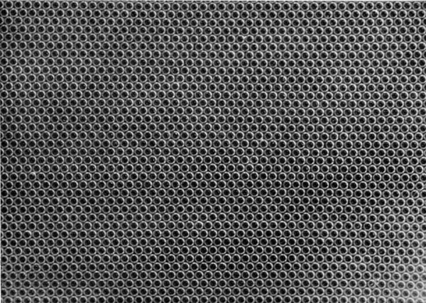
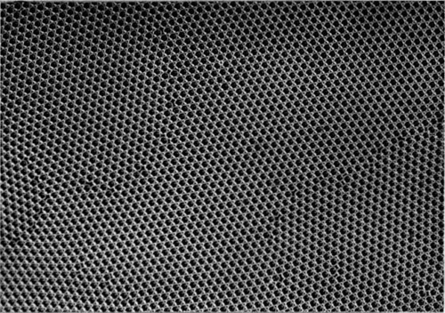
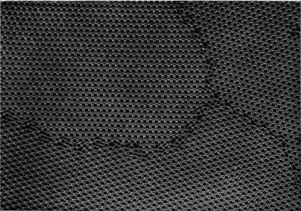

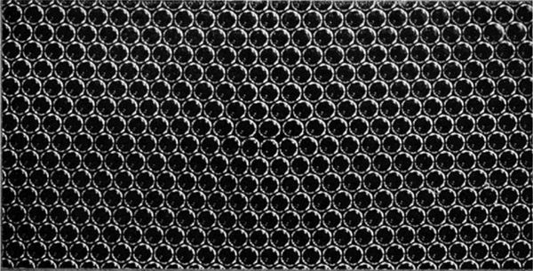

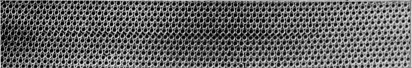


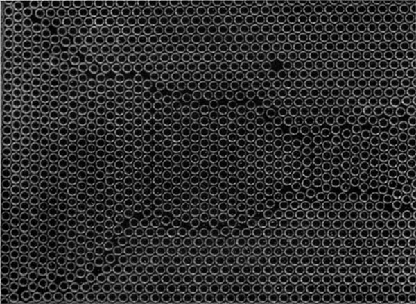


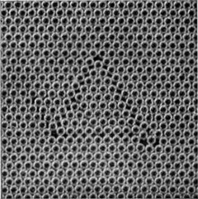

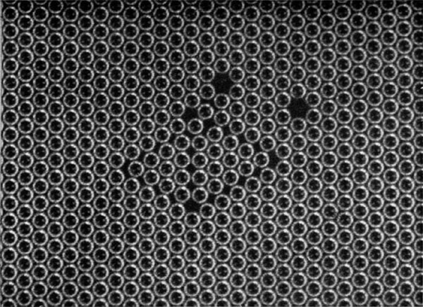

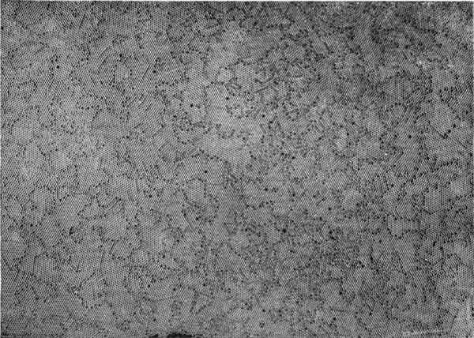


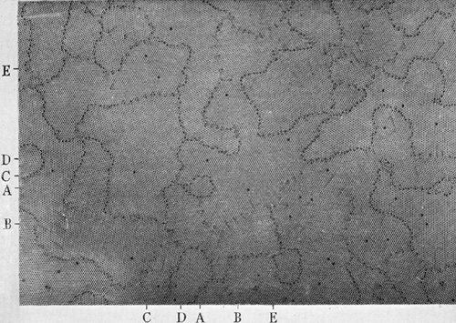

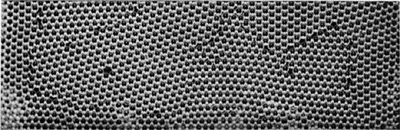
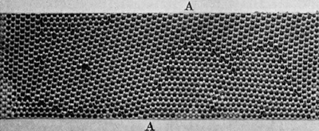

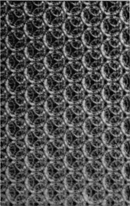
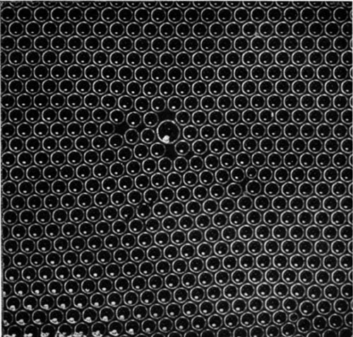
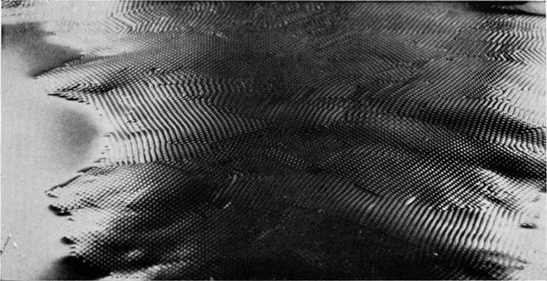
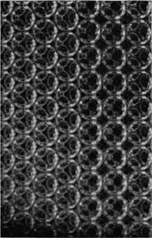

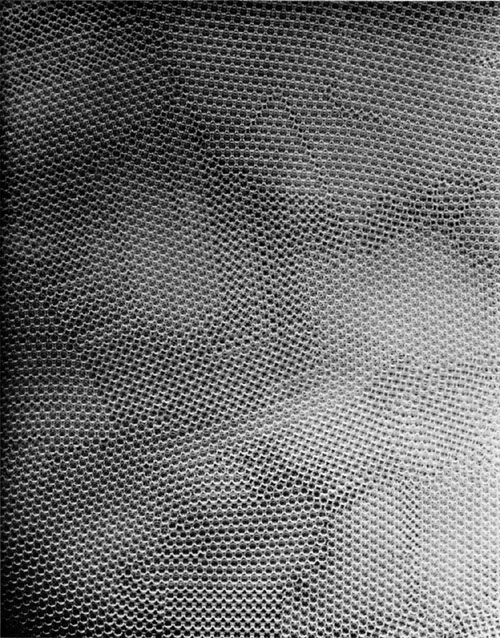
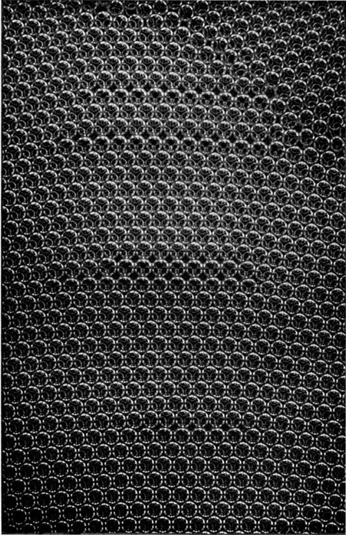